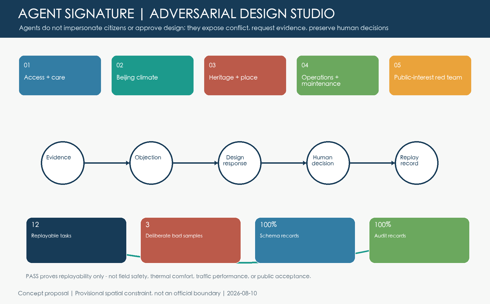
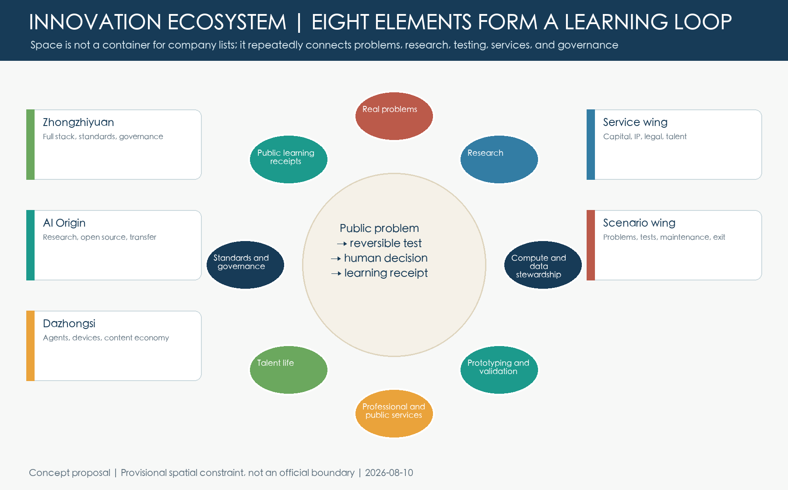
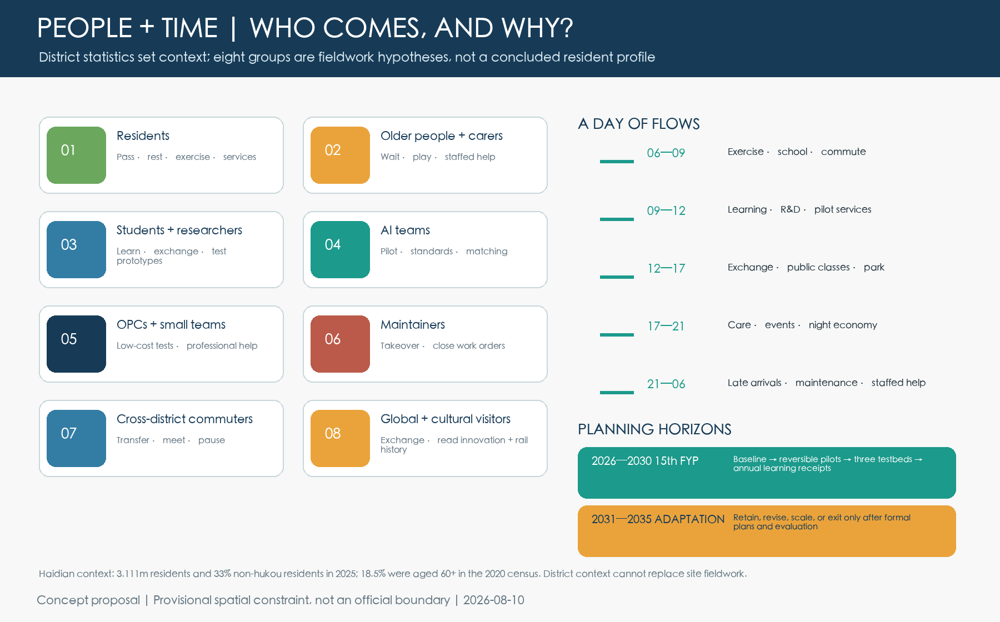
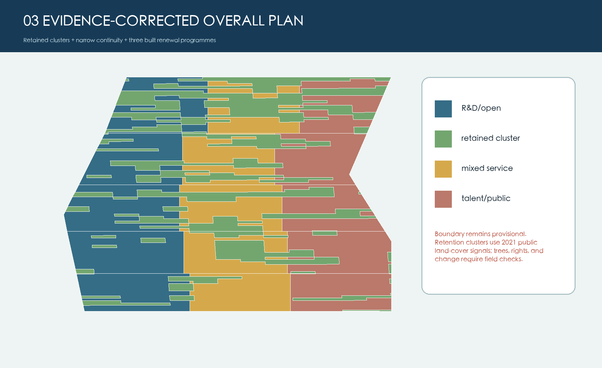

Overview map | Three-level scope | Key areas | Land use | Mobility | Blue-green public space | Buildings and renewal projects | AI scenarios | Core metrics | Brief coverage
Overall concept

Shared Eave depth

Shared Eave civic climate

Four-Corner Commons and 24 hours

Twelve civic journeys

Jingzhang Adversarial Design Studio

Three areas and landmarks

Mobility, blue-green, public service

Project evidence chain

Regional collaboration and three scales

Innovation-ecosystem learning loop

Detailed design of three key areas

Cultural identity and long-term operations

Eight groups, daily flows, and planning horizons

Implementation audit of six goals

Twelve civic journeys
Sunny seat, toilet wayfinding, staffed help
Continuous dry route, turning space, step-free service
Observable play, water, quiet waiting
Bookable table, power, non-commercial study
Static bilingual wayfinding, human explanation, railway story
Dry replacement, isolate one bay, keep the rest open
Continuous ground, less detour, rest points
Clear separation, short stay, no crossing blockage
Free seating, visible toilet route, traffic buffer
Staffed help, restrained lighting, visible assistance
Manual schedule, legible curb, event pause option
Dry waiting, drainage observation, human takeover
Adversarial studio tasks
accept for concept drawing
Human decision recordedreject invalid step and redraw
Negative sample interceptedaccept program reordering
Human decision recordedaccept offline equivalence
Human decision recordedaccept lifecycle logic
Human decision recordedkeep dimension unknown
Human decision recordedaccept ground first
Human decision recordedaccept time sharing for study
Human decision recordedreject all commercial variant
Negative sample interceptedaccept human visibility first
Human decision recordedreject signal control
Negative sample interceptedkeep performance unknown
Human decision recordedSelf-check status, sources, and assumptions
Self-check status: structure, spatial evidence, and professional evidence are reviewed by local gates. Sources and assumptions are registered in sources.json and assumptions.json. All three spatial metrics use provisional geometry and support concept comparison only.
Agent journeys and PASS results support concept-design review only. They do not represent public opinion, field safety, engineering feasibility, or government approval. Official geometry, surveys, heritage, mobility, utilities, trees, flows, and operating costs remain pending.
v5.2 evidence correction and replayable Agent

Public observation and concept design remain separate. Replay checks six embedded evidence-contract fields offline; PASS is not planning approval.
not run